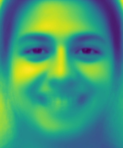

Part 1
For this part, I basically used the labeling tools provided on the course website. The images for triangulation used by me were my own face and also the face of George Clooney. The results are shown below.
Part 2: Midway Face
The midway face was computed by first finding the locations of the corresponding (labelled) points on the averaged face. Then, we triangulate the new points on the averaged face, and we get a list of lists of 3 numbers, where each number is the index of the point in the original array of points. Each list of 3 numbers represents the points that make up the corresponding triangle.
Now, we iterate over every triangle in the averaged face, and find the equivalent triangle in the first and second image face. Solving a linear matrix equation, we then get the transformation required to transform the mean triangle into the first and second image face, thereby finding the corresponding pixel coordinates to the mean triangle on the first and second image. Those corresponding pixel coordinates are probably mostly floats, and not integers, which is why to get the pixel values, we must interpolate from the surrounding integer pixel coordinates. Once we get the desired pixel values from the first and second image face, we average them. Then, we repeat for each mean triangle (triangle in the mean face triangulation).
The result is shown below.
Part 3: Morph Sequence
The morph sequence is produced by editing the above feature slightly. Rather than simply averaging the desired pixel values from the first and second image face for each mean triangle, we perform a weighted average. We multiply a constant alpha between 0 and 1, and multiply the desired pixel values from the first image by alpha, and sum that with the product of (1-alpha) and the desired pixel values from the second image. To get the points on the mean image, we also perform a weighted average of the labelled points of the first and second images based on alpha.
Now, by varying alpha from 0 to 1, we get a morph sequence, which is shown below
Me morphing into George Clooney
|
Tanjiro Kamado morphing into Muzan Kibutsuji |
Part 4: Mean Face on FEI Dataset
For this part, we used the second dataset on the website, the FEI Face dataset. It consists of 200 samples, each sample having 2 images: one where the person is smiling and one where they are not. To find the mean face, we first find the averaged points out of all the faces in the class (smiling or not). Then, we take each triangle from the averaged points face and average all the desired pixel values from all the faces of the class. We loop through all the triangles in the mean face.
Here are the results for raw averaging on the smiling and frontal (not smiling) faces, respectively, without morphing:
Smiling: |
Not Smiling: |
Here are the results for averaging and then morphing on the smiling and frontal (not smiling) faces, respectively
Smiling: |
Not Smiling: |
Here are some examples of morphing(GIFs):
Image of Smiling into Raw Average: |
Image of Smiling into Morphed Average: |
Image of Front face into Raw Average: |
Image of Front face into Morphed Average: |
Here are some examples of morphing(superimposing the original image onto the shape of the mean face of the class):
Image of Smiling (Original): |
Image of Smiling into Morphed Average: |
Image of Frontal (Original): |
Image of Frontal into Morphed Average: |
These are what the average faces look like:
Smiling: |
Not Smiling: |
Here is my face warped into the average geometry of both classes, as well as the average geometry of both classes into my face.
Aaron into Average Smiling: |
Average Smiling into Aaron: |
Aaron into Average Front: |
Average Front into Aaron: |
Part 5: Caricature
Here is a caricature of my face, obtained by extrapolating from the population mean of both the smile and the no smile class:
Smiling: |
Not Smiling: |
Bells and Whistles: Gender Change
Changing the gender of Metallica's lead singer to the average female face for each different class, smiling and not smiling. (I manually labelled the gender, i.e. classified each image as either a male or female).
Smiling: |
Not Smiling: |